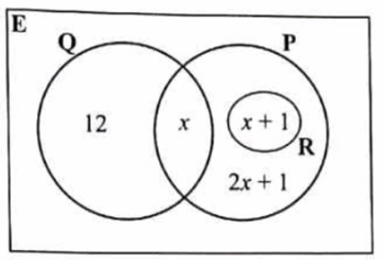
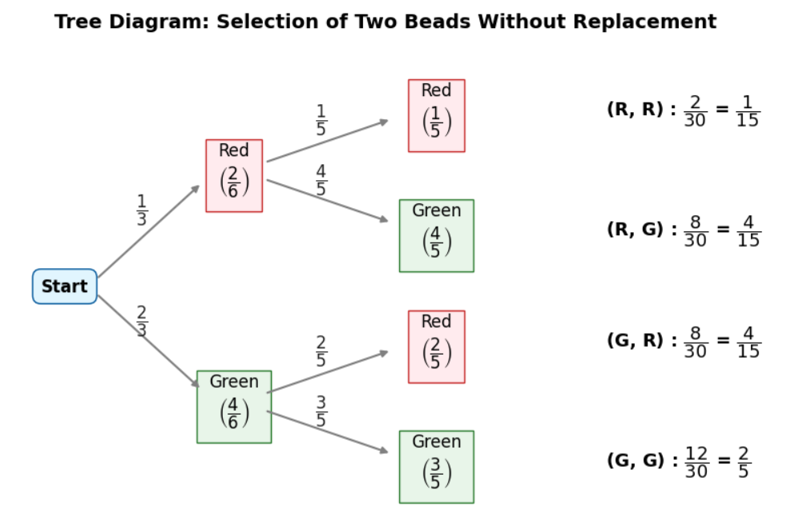
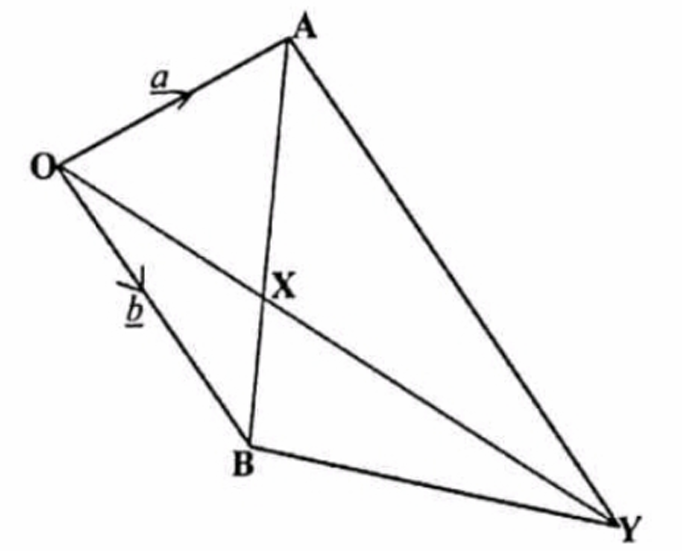
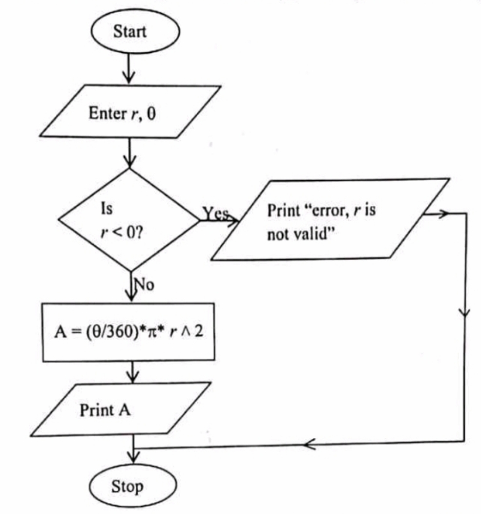
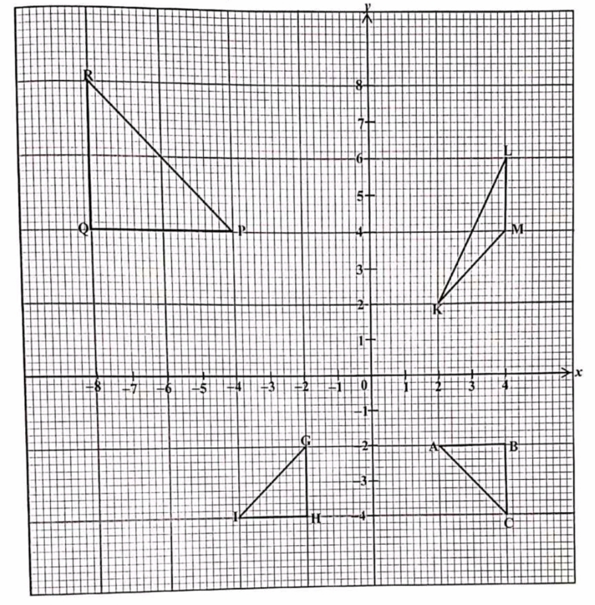
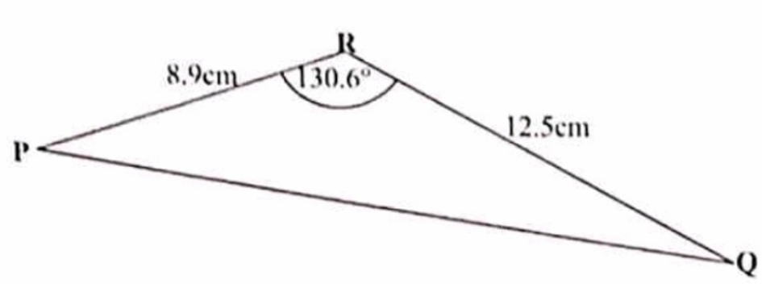
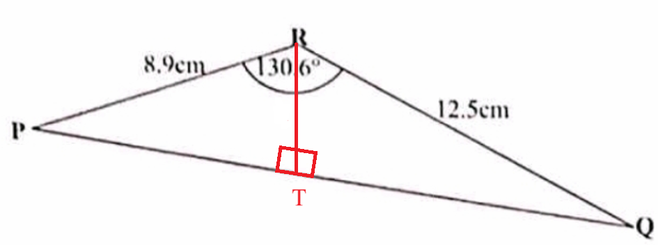
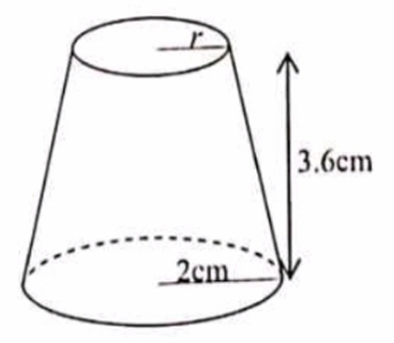
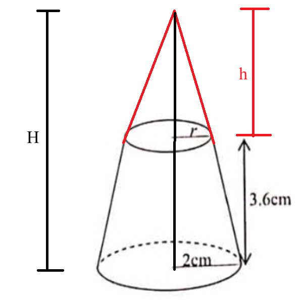

Examinations Council of Zambia: Ordinary Level: Mathematics: Paper 2
The Joy of the Teacher is the Success of the Students. – Samuel Chukwuemeka
Welcome to Our Site
I greet you this day,
These are the solutions to the ECZ Mathematics Paper 2 questions.
Please review the Formulas, rules/laws, and theorems on the website for each topic as applicable.
If time permits and there is sufficient interest, video solutions may be provided. Please subscribe to the
YouTube channel to be notified
of upcoming livestreams.
You are welcome to ask questions during the video livestreams.
If you find these resources valuable and if any of these resources were helpful in your passing the
Mathematics tests/exams, please consider making a donation:
Cash App: $ExamsSuccess or
cash.app/ExamsSuccess
PayPal: @ExamsSuccess or
PayPal.me/ExamsSuccess
Venmo: @ExamsSuccess or
Venmo.com/u/ExamsSuccess
Your donation is appreciated.
Comments, ideas, areas of improvement, questions, and constructive
criticisms are welcome.
Feel free to contact me. Please be positive in your message.
I wish you the best.
Thank you.
EXAMINATIONS COUNCIL OF ZAMBIA
Examination for General Certificate of Education Ordinary Level
Mathematics
Paper 2
4004/2
Time: 2 hours 30 minutes
Instructions to Candidates
(1.) Write the centre number and your examination number on every page of the separate Answer Booklet provided.
(2.) Write your answers and working in the separate Answer Booklet provided.
(3.) If you use more than one Answer Booklet, fasten the Answer Booklets together.
(4.) Omission of essential working will result in loss of marks.
(5.) There are twelve questions in the paper.
(i.) Section A
Answer all questions.
(ii.) Section B
Answer any four questions.
(6.) Silent non programmable Calculators may be used.
Information for Candidates
(1.) The number of marks is given in brackets [ ] at the end of each question or part question.
(2.) If the degree of accuracy is not specified in the question, and if the answer is not exact, give the answer
to three significant figures. Give answers in degrees to one decimal place.
(3.) Cell phones and other electronic devices are not allowed in the examination room.
Formula Sheet: List of Formulae


Two beads are selected at random from the box, one after the other without replacement.
(i.) Draw a tree diagram to illustrate this Information.
(ii.) Calculate the probability that the beads selected are of different colours.
(b.) Set Theory: The Venn diagram shows the number of elements of sets P, Q and R.

Find
(i.) the value of x, such that $n(P) = 18$,
(ii.) $n(R)'$,
(iii.) $n(R \cup Q)$,
(iv.) $n(P \cap Q)'$
$ \text{Let:} \\[3ex] \text{red} = R \hspace{7em} n(R) = 2 \\[3ex] \text{green} = G \hspace{6em} n(G) = 4 \\[3ex] \text{sample space} = S \hspace{3em} n(S) = 6 \\[5ex] \underline{\text{Selecting 2 Beads Without Replacement}} \\[3ex] P(RR) = \dfrac{2}{6} \times \dfrac{1}{5} = \dfrac{2}{30} = \dfrac{1}{15} \\[5ex] P(RG) = \dfrac{2}{6} \times \dfrac{4}{5} = \dfrac{8}{30} = \dfrac{4}{15} \\[5ex] P(GR) = \dfrac{4}{6} \times \dfrac{2}{5} = \dfrac{8}{30} = \dfrac{4}{15} \\[5ex] P(GG) = \dfrac{4}{6} \times \dfrac{3}{5} = \dfrac{12}{30} = \dfrac{2}{5} \\[5ex] $ (i.) The tree diagram to illustrate the information is:

$ (ii.) \\[3ex] P(\text{beads selected are of different colours}) \\[3ex] = P(RG) \text{ OR } P(GR) \\[3ex] = \dfrac{4}{15} + \dfrac{4}{15} \\[5ex] = \dfrac{8}{15} \\[5ex] (b.)(i.) \\[3ex] n(P) = 18 \\[3ex] x + (x + 1) + (2x + 1) = 18 \\[3ex] x + x + 1 + 2x + 1 = 18 \\[3ex] 4x + 2 = 18 \\[3ex] 4x = 18 - 2 \\[3ex] 4x = 16 \\[3ex] x = \dfrac{16}{4} \\[5ex] x = 4 \\[5ex] (ii.) \\[3ex] n(R') = 12 + x + (2x + 1) \\[3ex] = 12 + x + 2x + 1 \\[3ex] = 3x + 13 \\[3ex] = 3(4) + 13 \\[3ex] = 12 + 13 \\[3ex] = 25 \\[5ex] (iii.) \\[3ex] n(R \cup Q) = (x + 1) + (12 + x) - 0 \quad\text{Addition Rule for Mutually Exclusive events} \\[3ex] = x + 1 + 12 + x \\[3ex] = 13 + 2x \\[3ex] = 13 + 2(4) \\[3ex] = 13 + 8 \\[3ex] = 21 \\[5ex] (iv.) \\[3ex] n(P \cap Q)' = 12 + (x + 1) + (2x + 1) \\[3ex] = 12 + x + 1 + 2x + 1 \\[3ex] = 3x + 14 \\[3ex] = 3(4) + 14 \\[3ex] = 12 + 14 \\[3ex] = 26 $
(a.) Construct a quadrilateral PQRS in which PQ = 10cm, angle SPQ = 70°, QR = 6.5cm, PS = 5cm, and SR = 7cm.
(b.) Measure and write the angle PQR.
(c.) On your diagram, construct the locus of points within the quadrilateral PQRS which are
(i.) 3cm from PQ,
(ii.) equidistant from PS and SR.
(d.) L is a point inside quadrilateral PQRS such that it is 3cm from PQ and equidistant from PS and SR.
Label the point L.
(e.) M is another point inside quadrilateral PQRS such that it is less than or equal to 3cm from PQ and nearer to PS than to SR.
Indicate clearly, by shading, the region in which M must lie.
(b.) Vectors: In the following diagram, $\overrightarrow{OA} = \underline{a}$, $\overrightarrow{OB} = \underline{b}$ and $AX : AB = 2 : 3$.

(i.) Express in terms of a and/or b
(a.) $\overrightarrow{AB}$,
(b.) $\overrightarrow{XB}$,
(c.) $\overrightarrow{XO}$,
(ii.) Given also that $\overrightarrow{OY} = 3\overrightarrow{OX}$, show that $\overrightarrow{BY} = \underline{a} + \underline{b}$
$ (a.) \\[3ex] \dfrac{2}{x + 2} - \dfrac{5}{3x - 1} \\[5ex] = \dfrac{2(3x - 1) - 5(x + 2)}{(x + 2)(3x - 1)} \\[5ex] = \dfrac{6x - 2 - 5x - 10}{(x + 2)(3x - 1)} \\[5ex] \dfrac{x - 12}{(x + 2)(3x - 1)} \\[5ex] (b.) \\[3ex] \overrightarrow{OA} = a \\[3ex] \overrightarrow{OB} = b \\[3ex] AX : AB = 2 : 3 \\[3ex] \dfrac{AX}{AB} = \dfrac{2}{3} \\[5ex] \overrightarrow{AX} = \dfrac{2\overrightarrow{AB}}{3} \\[5ex] (i.)(a.) \\[3ex] \overrightarrow{OA} + \overrightarrow{AB} = \overrightarrow{OB} \\[3ex] \overrightarrow{AB} = \overrightarrow{OB} - \overrightarrow{OA} \\[3ex] = b - a \\[5ex] (b.) \\[3ex] \overrightarrow{AX} + \overrightarrow{XB} = \overrightarrow{AB} \\[3ex] \overrightarrow{XB} = \overrightarrow{AB} - \overrightarrow{AX} \\[3ex] = \overrightarrow{AB} - \dfrac{2\overrightarrow{AB}}{3} \\[5ex] = \dfrac{3\overrightarrow{AB} - 2\overrightarrow{AB}}{3} \\[5ex] = \dfrac{\overrightarrow{AB}}{3} \\[5ex] = \dfrac{b - a}{3} \\[5ex] (c.) \\[3ex] \overrightarrow{XO} + \overrightarrow{OB} = \overrightarrow{XB} \\[3ex] \overrightarrow{XO} = \overrightarrow{XB} - \overrightarrow{OB} \\[3ex] = \dfrac{b - a}{3} - b \\[5ex] = \dfrac{b - a - 3b}{3} \\[5ex] = \dfrac{-a - 2b}{3} \\[5ex] = -\dfrac{(a + 2b)}{3} \\[5ex] (ii.) \\[3ex] \overrightarrow{OY} = 3\overrightarrow{OX} \\[3ex] \overrightarrow{OB} + \overrightarrow{BY} = \overrightarrow{OY} \\[3ex] \overrightarrow{BY} = \overrightarrow{OY} - \overrightarrow{OB} \\[3ex] = 3\overrightarrow{OX} - b \\[3ex] = 3(-\overrightarrow{XO}) - b \\[3ex] = -3\overrightarrow{XO} - b \\[3ex] = -3\left(\dfrac{-a - 2b}{3}\right) - b \\[5ex] = -(-a - 2b) - b \\[3ex] = a + 2b - b \\[3ex] = a + b $
(b.) Matrix Algebra: Given that matrix $B = \begin{bmatrix} 4 & x \\ -1 & -3x \end{bmatrix}$,
(i.) find the value of x for which the determinant of B is 22,
(ii.) hence, find the inverse of B.
$ (a.) \\[3ex] 7 - 2x^2 = x \\[3ex] 0 = x + 2x^2 - 7 \\[3ex] 2x^2 + x - 7 = 0 \\[3ex] \text{Compare to the standard form: } ax^2 + bx + c = 0 \\[3ex] a = 2 \\[3ex] b = 1 \\[3ex] c = -7 \\[3ex] x = \dfrac{-b \pm \sqrt{b^2 - 4ac}}{2a} \\[5ex] = \dfrac{-1 \pm \sqrt{1^2 - 4(2)(-7)}}{2(2)} \\[5ex] = \dfrac{-1 \pm \sqrt{1 + 56}}{4} \\[5ex] = \dfrac{-1 \pm \sqrt{57}}{4} \\[5ex] = \dfrac{-1 \pm 7.549834435}{4} \\[5ex] = \dfrac{-1 + 7.549834435}{4} \text{ or } \dfrac{-1 - 7.549834435}{4} \\[5ex] = \dfrac{6.549834435}{4} \text{ or } -\dfrac{8.549834435}{4} \\[5ex] = 1.637458609 \text{ or } -2.137458609 \\[5ex] \approx 1.64 \text{ or } -2.14 \quad\text{(to 2 decimal places)} \\[3ex] $ Check (If you have time, check to confirm.)
| LHS | RHS |
|---|---|
| $7 - 2x$ | $x$ |
$
7 - 2(-2.137458609)^2 \\[4ex]
7 - 2(4.568729305) \\[3ex]
7 - 9.13745861 \\[3ex]
2.13745861
$
$ 7 - 2(1.637458609)^2 \\[4ex] 7 - 2(2.681270696) \\[3ex] 7 - 5.362541392 \\[3ex] 1.637458608 $ |
$
-2.137458609
$
$ 1.637458609 $ |
$ (b.)(i.) \\[3ex] B = \begin{bmatrix} 4 & x \\ -1 & -3x \end{bmatrix} \\[5ex] |B| = 4(-3x) - [(-1)(x)] = 22 \\[3ex] -12x + x = 22 \\[3ex] -11x = 22 \\[3ex] x = \dfrac{22}{-11} \\[5ex] x = -2 \\[5ex] -3x = -3(-2) = 6 \\[3ex] B = \begin{bmatrix} 4 & -2 \\ -1 & 6 \end{bmatrix} \\[5ex] (ii.) \\[3ex] \underline{\text{Row Reduction Method}} \\[3ex] \left[ \begin{array}{cc|cc} 4 & -2 & 1 & 0 \\[3ex] -1 & 6 & 0 & 1 \end{array} \right] \underrightarrow{R_1 + 4R_2} \left[ \begin{array}{cc|cc} 4 & -2 & 1 & 0 \\[3ex] 0 & 22 & 1 & 4 \end{array} \right] \underrightarrow{R_2 + 11R_1} \left[ \begin{array}{cc|cc} 44 & 0 & 12 & 4 \\[3ex] 0 & 22 & 1 & 4 \end{array} \right] \\[4em] \xrightarrow[\dfrac{R_2}{22}]{\dfrac{R_1}{44}} \left[ \begin{array}{cc|cc} 1 & 0 & \dfrac{12}{44} & \dfrac{4}{44} \\[5ex] 0 & 1 & \dfrac{1}{22} & \dfrac{4}{22} \end{array} \right] \\[5em] \dfrac{12}{44} = \dfrac{3}{11} \\[5ex] \dfrac{4}{44} = \dfrac{1}{11} \\[5ex] \dfrac{4}{22} = \dfrac{2}{11} \\[5ex] B^{-1} = \begin{bmatrix} \dfrac{3}{11} & \dfrac{1}{11} \\[5ex] \dfrac{1}{22} & \dfrac{2}{11} \end{bmatrix} $
(b.) Programming Logic: The flowchart below shows the steps that are carried out in calculating and displaying the area (A) of a sector given its radius (r) and angle of the sector (θ)

Write a psuedocode corresponding to the flowchart program above.
$ (a.) \\[3ex] \displaystyle\int (6x^5 - x^4 + 3x^2 - 1)\;dx \\[3ex] = \dfrac{6x^6}{6} - \dfrac{x^5}{5} + \dfrac{3x^3}{3} - x + C \quad\text{C is an arbitrary constant} \\[5ex] = x^6 - \dfrac{x^5}{5} + x^3 - x + C \\[5ex] \displaystyle\int_{-1}^2 (6x^5 - x^4 + 3x^2 - 1)\;dx \\[3ex] = \left[x^6 - \dfrac{x^5}{5} + x^3 - x + C\right]_{-1}^2 \\[5ex] ........................................................... \\[3ex] \underline{\text{Upper Limit of Integration}} \\[3ex] \text{When x = 2} \\[3ex] 2^6 - \dfrac{2^5}{5} + 2^3 - 2 + C \\[3ex] = 64 - \dfrac{32}{5} + 8 - 2 + C \\[5ex] = \dfrac{320 - 32 + 40 - 10}{5} + C \\[5ex] = \dfrac{318}{5} \\[5ex] \underline{\text{Lower Limit of Integration}} \\[3ex] \text{When x = -1} \\[3ex] (-1)^6 - \dfrac{(-1)^5}{5} + (-1)^3 - (-1) + C \\[5ex] = 1 - \dfrac{-1}{5} + (-1) + 1 + C \\[5ex] = 1 + \dfrac{1}{5} - 1 + 1 + C \\[5ex] = \dfrac{5 + 1}{5} + C \\[5ex] = \dfrac{6}{5} + C \\[5ex] ........................................................... \\[3ex] = \dfrac{318}{5} - \dfrac{6}{5} \\[5ex] = \dfrac{312}{5} \\[5ex] $ The psuedocode for the flowchart is written as:
Begin
Input r, θ
If r < 0 then
Print "Error: r is not valid"
Else
A = (θ / 360) * π * r^2
Print A
End If
Stop
Find the
(i.) value of w,
(ii.) nth term,
(iii.) sum of the first 4 terms.
(b.) Exponents: Simplify $\dfrac{10a}{m^2n^2} \div \dfrac{5a^3}{2m^2n^2} \\[5ex]$
$ \underline{\text{Geometric Progression, } GP} \\[3ex] r = \text{common ratio} \\[3ex] a = \text{first term} \\[3ex] n = \text{number of terms} \\[3ex] GP_n = \text{nth term of a GP} \\[3ex] SGP_n = \text{sum of n terms of a GP} \\[5ex] (i.) \\[3ex] 3w - 2, 3w + 6, 3w + 30 \\[3ex] r = \dfrac{3w + 6}{3w - 2} = \dfrac{3w + 30}{3w + 6} \\[5ex] (3w + 6)(3w + 6) = (3w - 2)(3w + 30) \\[3ex] 9w^2 + 18w + 18w + 36 = 9w^2 + 90w - 6w - 60 \\[3ex] 36w + 36 = 84w - 60 \\[3ex] 36 + 60 = 84w - 36w \\[3ex] 48w = 96 \\[3ex] w = \dfrac{96}{48} \\[5ex] w = 2 \\[5ex] a = 3w - 2 \\[3ex] = 3(2) - 2 \\[3ex] = 4 \\[5ex] 3w + 6 \\[3ex] = 3(2) + 6 \\[3ex] = 12 \\[5ex] 3w + 30 \\[3ex] = 3(2) + 30 \\[3ex] = 36 \\[5ex] r = \dfrac{12}{4} = \dfrac{36}{12} = 3 \\[5ex] (ii.) \\[3ex] GP_n = ar^{n - 1} \\[4ex] = 4 \cdot 3^{n - 1} \\[4ex] = 4(3^{n - 1}) \\[5ex] \text{Check to confirm if you have the time} \\[3ex] \text{first term: } n = 1 \\[3ex] GP_1 = 4(3^{1 - 1}) \\[4ex] = 4(3^0) \\[4ex] = 4(1) \\[3ex] = 4 \\[5ex] \text{second term: } n = 2 \\[3ex] GP_2 = 4(3^{2 - 1}) \\[4ex] = 4(3^1) \\[4ex] = 4(3) \\[3ex] = 12 \\[5ex] \text{third term: } n = 3 \\[3ex] GP_3 = 4(3^{3 - 1}) \\[4ex] = 4(3^2) \\[4ex] = 4(9) \\[3ex] = 36 \\[5ex] (iii.) \\[3ex] SGP_n = \dfrac{a(r^n - 1)}{r - 1} \quad (3 \gt 1) \\[5ex] = \dfrac{4(3^n - 1)}{3 - 1} \\[5ex] = \dfrac{4(3^n - 1)}{2} \\[5ex] = 2(3^n - 1) \\[5ex] SGP_4 = 2(3^4 - 1) \\[4ex] = 2(81 - 1) \\[3ex] = 2(80) \\[3ex] = 160 \\[5ex] \text{Check to confirm if you have the time} \\[3ex] \text{fourth term: } n = 4 \\[3ex] GP_4 = 4(3^{4 - 1}) \\[4ex] = 4(3^3) \\[4ex] = 4(27) \\[3ex] = 108 \\[5ex] GP_1 + GP_2 + GP_3 + GP_4 \\[3ex] = 4 + 12 + 36 + 108 \\[3ex] = 160 \\[5ex] (b.) \\[3ex] \dfrac{10a}{m^2n^2} \div \dfrac{5a^3}{2m^2n^2} \\[5ex] = \dfrac{10a}{m^2n^2} \times \dfrac{2m^2n^2}{5a^3} \\[5ex] = \dfrac{4a}{a^3} \\[5ex] = \dfrac{4}{a^2} $
Mapulanga's carpentry shop makes two types of chairs, type A and type B for sale.
The cost of making one chair f each type is K2 000.00.
The shop has K140 000.00 available for making chairs.
The number of chairs of type A must be at least 20 while that of type B must be at least 10.
(a.) If x is the number of chairs of type A and y the number of chairs of type B, write three inequalities which represent these conditions.
(b.) Using a scale of 2cm to represent 10 chairs on each axis, draw x and y axes for $0 \le x \le 70$ and $0 \le y \le 70$ respectively and shade the unwanted region to show clearly the region where the solution of the inequalities lie.
(c.) Given that the profit on a type A chair is K60.00 and on a type B is K30.00, how many chairs of each type should be made for maximum profit?
(d.) Calculate the maximum profit.

(a.) Describe fully the single transformation which maps triangle ABC onto triangle GHI.
(b.) Triangle ABC is mapped onto triangle PQR by an enlargement.
Find the matrix representing this transformation.
(c.) A stretch represented by the matrix $\begin{bmatrix} 1 & 0 \\ 0 & 2 \end{bmatrix}$ maps triangle ABC onto triangle DEF (not in the diagram).
Find the coordinates of D, E and F.
(d.) Triangle KLM is the image of triangle ABC under a shear.
Find the shear factor and invariant line.

Calculate
(i.) PQ,
(ii.) the area of triangle PQR,
(iii.) the shortest distance from R to PQ.
(b.) Trigonometric Equations: Solve the equation $2\sin x = 1 \text{ for } 90^\circ \le x \le 270^\circ$.
(c.) Rational Expressions: Simplify $\dfrac{3x^3 - 6x^2}{x^2 - 2x}$
$ (i.) \\[3ex] |PQ|^2 = |PR|^2 + |QR|^2 - 2 \times |PR| \times |QR| \times \cos \angle PRQ \quad\text{Cosine Rule} \\[3ex] = 8.9^2 + 12.5^2 - 2(8.9)(12.5) \times \cos 130.6^\circ \\[3ex] = 79.21 + 156.25 - 222.5(-0.6507742173) \\[3ex] = 235.46 + 144.7972633 \\[3ex] = 380.2572633 \\[3ex] |PQ| = \sqrt{380.2572633} \\[3ex] = 19.50018624 \\[3ex] \approx 19.5cm \quad\text{to 3 significant figures.} \\[5ex] (ii.) \\[3ex] \text{Area of } \triangle PQR = \dfrac{1}{2} \times |PR| \times |12.5| \times \sin \angle PRQ \\[3ex] = 0.5 \times 8.9 \times 12.5 \times \sin 130.6^\circ \\[3ex] = 55.625 \times 0.7592713073 \\[3ex] = 42.23446647 \\[3ex] \approx 42.2cm^2 \\[3ex] $ The shortest distance from R to PQ is the perpendicular distance from R to PQ.
Let us draw the perpendicular distance from R to PQ at T
⊥ distance = |RT|.

$ (iii.) \\[3ex] \underline{\triangle PRQ} \\[3ex] \dfrac{\sin \angle PQR}{|PR|} = \dfrac{\sin\angle PRQ}{|PQ|} \quad\text{Sine Rule} \\[5ex] \sin\angle PQR = \dfrac{|PR|\sin\angle PRQ}{|PQ|} \\[5ex] = \dfrac{8.9 \times \sin 130.6}{19.50018624} \\[5ex] = \dfrac{8.9 \times 0.7592713073}{19.50018624} \\[5ex] = \dfrac{6.757514635}{19.50018624} \\[5ex] = 0.3465359024 \\[3ex] \angle PQR = \sin^{-1}(0.3465359024) \\[3ex] = 20.27558118^\circ \\[5ex] \underline{\triangle TRQ} \\[3ex] \dfrac{|RT|}{\sin\angle TQR} = \dfrac{|QR|}{\sin\angle RTQ} \\[5ex] ............................................................. \\[3ex] \angle TQR = \angle PQR = 20.27558118^\circ \quad\text{Diagram} \\[3ex] \angle RTQ = 90^\circ \quad\angle \text{ formed by the } \perp \text{ distance} \\[3ex] ............................................................. \\[3ex] \dfrac{|RT|}{\sin 20.27558118^\circ} = \dfrac{12.5}{\sin 90^\circ} \\[5ex] |RT| = \dfrac{12.5 \sin 20.27558118}{\sin 90} \\[5ex] = \dfrac{12.5 \times 0.3465359023}{1} \\[5ex] = 4.331698779 \\[3ex] \approx 4.33cm \\[5ex] (b.) \\[3ex] 2\sin x = 1 \text{ for } 90^\circ \le x \le 270^\circ \\[3ex] \sin x = \dfrac{1}{2} \\[5ex] \sin x = 0.5 \\[3ex] x = \sin^{-1}(0.5) \\[3ex] x = 30^\circ \quad\text{1st Quadrant is outside the domain: Discard} \\[5ex] \sin 30 = \sin (180 - 30) \quad\text{2nd Quadrant Identity} \\[3ex] = \sin 150^\circ \quad\text{2nd Quadrant is in the domain: Keep} \\[3ex] x = 150^\circ \\[3ex] $ Check (If you have the time.)
| LHS | RHS |
|---|---|
| $ 2\sin x \\[3ex] 2 \times \sin 150^\circ \\[3ex] 2 \times 0.5 \\[3ex] 1 $ | $1$ |
$ (c.) \\[3ex] \dfrac{3x^3 - 6x^2}{x^2 - 2x} \\[5ex] = \dfrac{3x^2(x - 2)}{x(x - 2)} \\[5ex] = 3x $
The values of x and y are connected by the equation $y = -x^3 + x^2 + 6x.
Some corresponding values of x and y are given in the table below.
| $x$ | $-3$ | $-2$ | $-1$ | $0$ | $1$ | $2$ | $3$ | $4$ |
| $y$ | $18$ | $0$ | $-4$ | $0$ | $6$ | $8$ | $0$ | $q$ |
(i.) Calculate the value of $q$.
(ii.) Using a scale of 2cm to represent 1 unit on the x-axis for $-3 \le x \le 4$ and 2cm to represent 10 units on the y-axis for $-30 \le y \le 20$, draw the graph of $y = -x^3 + x^2 + 6x$.
(iii.) Use your graph to
(a.) solve the equation $-x^3 + x^2 + 5x = 4 - x$
(b.) estimate the gradient of the curve at the point where $x = 1$.
(b.) Applications of Differential Calculus: Find the equation of the normal to the curve $y = x^2 + x + 2$ at the point (1, 4).
| Marks ($x$) | $10 \le x \20$ | $20 \le x \30$ | $30 \le x \40$ | $40 \le x \50$ | $50 \le x \60$ | $60 \le x \70$ | $70 \le x \80$ |
| Frequency | $3$ | $7$ | $12$ | $15$ | $18$ | $3$ | $2$ |
(a.) Calculate the standard deviation.
(b.) Answer this part of the question on a sheet of graph paper.
(i.) Using the information in the table above, copy and complete the cumulative frequency table below.
| Marks ($x$) | $\le 10$ | $\le 20$ | $\le 30$ | $\le 40$ | $\le 50$ | $\le 60$ | $\le 70$ | $\le 80$ |
| Cumulative frequency | $0$ | $3$ | $10$ | $22$ | $50$ |
(ii.) Using a scale of 2cm to represent 10 marks on the x-axis for $0 \le x \le 80$ and 2cm to represent 5 units on the y-axis for $0 \le y \le 50$, draw a smooth cumulative frequency curve.
(iii.) Showing your method clearly, use your graph to estimate the 70th percentile.
(i.) Draw a sketch to represent the above information.
(ii.) Calculate the distance
(a.) QR along longitude 80°E in kilometres,
(b.) RT along latitude 50°N in kilometres.
(b.) Mensuration: The figure below is a frustrum of a cone.
The base radius is 2cm, top radius is rcm and the height is 3.6cm. [Take π as 3.142]

Calculate the
(i.) value of r if the height of the cone from which the frustrum was made was 6cm,
(ii.) volume of the frustrum.
Let us draw the complete cone as shown:

$ r = \text{base radius of the small cone} = \text{top radius} = ? \\[3ex] R = \text{base radius of the big cone} = 2cm \\[3ex] H = \text{height of the big cone} = 6cm \\[3ex] h = \text{height of the small cone} = ? \\[3ex] h_f = \text{height of the frustrum} = 3.6cm \\[3ex] v = \text{volume of the small cone} \\[3ex] V = \text{volume of the big cone} \\[3ex] v_f = \text{volume of the frustrum} \\[5ex] h + h_f = H \\[3ex] h + 3.6 = 6 \\[3ex] h = 6 - 3.6 \\[3ex] h = 2.4cm \\[5ex] (i.) \\[3ex] \dfrac{r}{R} = \dfrac{h}{H} \quad\text{Similar cones} \\[5ex] \dfrac{r}{2} = \dfrac{2.4}{6} \\[5ex] r = \dfrac{2 \times 2.4}{6} \\[5ex] r = \dfrac{4.8}{6} \\[5ex] r = 0.8cm \\[5ex] (ii.) \\[3ex] v = \dfrac{1}{3} \cdot \pi \cdot r^2 \cdot h \\[5ex] = \dfrac{1}{3} \cdot 3.142 \cdot (0.8)^2 \cdot 2.4 \\[5ex] = \dfrac{4.826112}{3} \\[5ex] = 1.608704cm^3 \\[5ex] V = \dfrac{1}{3} \cdot \pi \cdot R^2 \cdot H \\[5ex] = \dfrac{1}{3} \cdot 3.142 \cdot 2^2 \cdot 6 \\[5ex] = \dfrac{75.408}{3} \\[5ex] = 25.136cm^3 \\[5ex] v_f = V - v \\[3ex] = 25.136 - 1.608704 \\[3ex] = 23.527296 \\[3ex] \approx 23.5cm^3 \quad\text{(to 3 significant figures.)} $